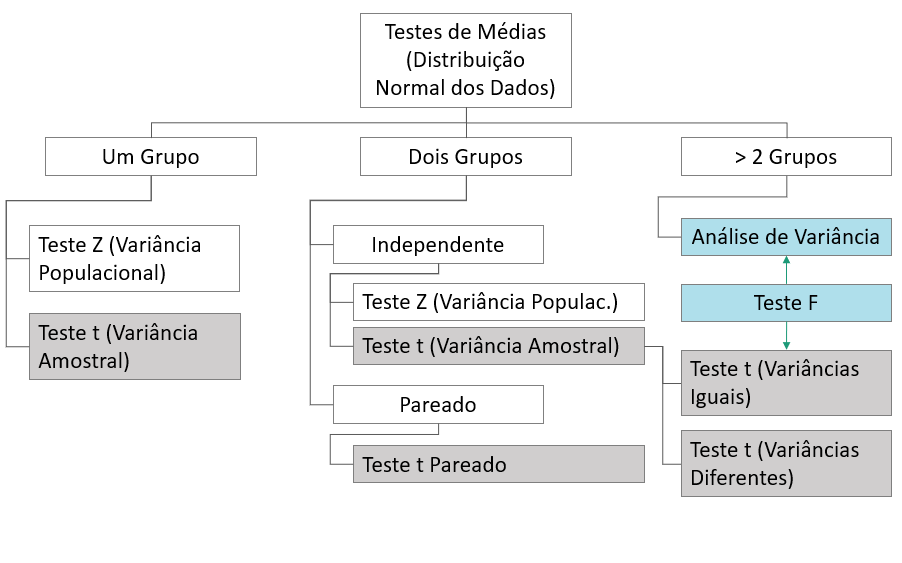
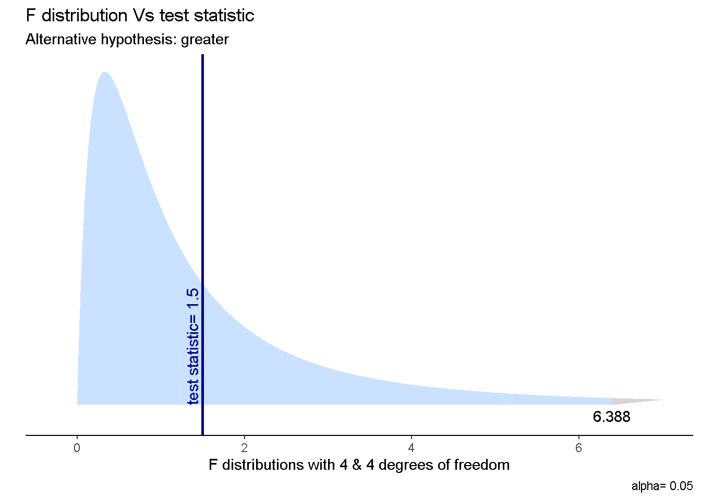
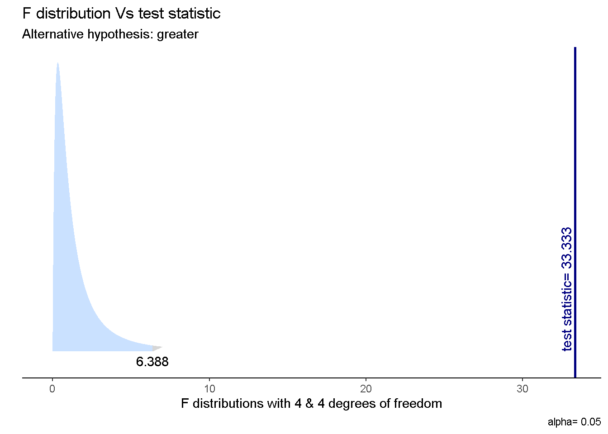

Capítulo 2 Teste t Para Duas Médias
2.1 Teste t de Student para dois grupos ou médias independentes
- Consiste em uma comparação simples de dois tratamentos de um fator
- As amostras devem ser independentes
- Isso quer dizer que as unidades experimentais para cada tratamento são diferentes
- As variâncias populacionais não são conhecidas
- Adimite-se a presuposição de normalidade
- Deve ser verificada a homogeneidade das variâncias

2.2 A.Variâncias Homocedásticas
Os dados que seguem são relacionados a cinco determinações da resistência (mpa) para dois tipos de concreto. Ao nível de 5% de significância, há evidência de que a resistência entre os dois tipos de concretos é diferente?
Os dados seguem abaixo:
## [1] 54 55 58 51 57## [1] 50 54 56 52 532.2.3 Pressuposição de Normalidade
##
## Shapiro-Wilk normality test
##
## data: c1
## W = 0.96358, p-value = 0.8327##
## Shapiro-Wilk normality test
##
## data: c2
## W = 0.99929, p-value = 0.99982.2.4 Teste de Homogeneidade das Variâncias
- Teste F > 1 unilateral à direita
- O primeiro vetor deve conter o conjunto de dados de maior variância!
- Ho: sig^2(1) = sig^2(2)
- Ha: sig^2(1) > sig^2(2)
##
## F test to compare two variances
##
## data: c1 and c2
## F = 1.5, num df = 4, denom df = 4, p-value = 0.352
## alternative hypothesis: true ratio of variances is greater than 1
## 95 percent confidence interval:
## 0.2348067 Inf
## sample estimates:
## ratio of variances
## 1.5## Warning in geom_text(aes(x = ub, y = -0.025), label = round(ub, 3), vjust = 0.3): All aesthetics have length 1, but the data has 10000
## rows.
## ℹ Please consider using `annotate()` or provide this
## layer with data containing a single row.
2.2.5 Teste t para variâncias homocedásticas
- H0: mu(1) = mu(2)
- Ha: mu(1) != mu(2)
.png)
##
## Two Sample t-test
##
## data: c1 and c2
## t = 1.2649, df = 8, p-value = 0.2415
## alternative hypothesis: true difference in means is not equal to 0
## 95 percent confidence interval:
## -1.646113 5.646113
## sample estimates:
## mean of x mean of y
## 55 532.3 B. Variâncias Heterocedásticas
Os dados que seguem são relacionados a cinco determinações da resistência (mpa) para dois tipos de concreto. Ao nível de 5% de significância, há evidência de que o concreto 1 é mais resistente?
Os dados seguem abaixo:
## [1] 54 55 58 51 57## [1] 40 34 56 72 632.3.3 Pressuposição de Normalidade
##
## Shapiro-Wilk normality test
##
## data: c.1
## W = 0.96358, p-value = 0.8327##
## Shapiro-Wilk normality test
##
## data: c.2
## W = 0.94911, p-value = 0.73082.3.4 Teste de Homogeneidade das Variâncias
- Teste F > 1 unilateral à direita
- O primeiro vetor deve conter o conjunto de dados de maior variância!
- Ho: sig^2(1) = sig^2(2)
- Ha: sig^2(2) > sig^2(1)
##
## F test to compare two variances
##
## data: c.2 and c.1
## F = 33.333, num df = 4, denom df = 4, p-value = 0.002496
## alternative hypothesis: true ratio of variances is greater than 1
## 95 percent confidence interval:
## 5.217927 Inf
## sample estimates:
## ratio of variances
## 33.33333## Warning in geom_text(aes(x = ub, y = -0.025), label = round(ub, 3), vjust = 0.3): All aesthetics have length 1, but the data has 10000
## rows.
## ℹ Please consider using `annotate()` or provide this
## layer with data containing a single row.
2.3.5 Teste t para variâncias heterocedásticas
- H0: mu(1) = mu(2)
- Ha: mu(1) > mu(2)
.png)
##
## Welch Two Sample t-test
##
## data: c.1 and c.2
## t = 0.27869, df = 4.2398, p-value = 0.3968
## alternative hypothesis: true difference in means is greater than 0
## 95 percent confidence interval:
## -13.05363 Inf
## sample estimates:
## mean of x mean of y
## 55 53